- 00 开篇词 为什么每个测试人都要学好性能测试？.md.html
- 01 JMeter 的核心概念.md.html
- 02 JMeter 参数化策略.md.html
- 03 构建并执行 JMeter 脚本的正确姿势.md.html
- 04 JMeter 二次开发其实并不难.md.html
- 05 如何基于 JMeter API 开发性能测试平台？.md.html
- 06 Nginx 在系统架构中的作用.md.html
- 07 你真的知道如何制定性能测试的目标吗？.md.html
- 08 性能测试场景的分类和意义.md.html
- 09 如何制定一份有效的性能测试方案？.md.html
- 10 命令行监控 Linux 服务器的要点.md.html
- 11 分布式服务链路监控以及报警方案.md.html
- 12 如何把可视化监控也做得酷炫？.md.html
- 13 Docker 的制作、运行以及监控.md.html
- 14 如何从 CPU 飙升定位到热点方法？.md.html
- 15 如何基于 JVM 分析内存使用对象？.md.html
- 16 如何通过 Arthas 定位代码链路问题？.md.html
- 17 如何应对 Redis 缓存穿透、击穿和雪崩？.md.html
- 18 如何才能优化 MySQL 性能？.md.html
- 19 如何根治慢 SQL？.md.html
- 20 结束语 线上全链路性能测试实践总结.md.html
- 捐赠
03 构建并执行 JMeter 脚本的正确姿势
通过上两讲的学习，相信你已经掌握了 JMeter 的组件结构、关联、参数化等知识，这些是你使用性能测试工具的基础，那如何才能有效地执行这些脚本呢？
说到这个话题，我回想起一些找我咨询的同学。
有些团队在组建之初往往并没有配置性能测试人员，后来随着公司业务体量的上升，开始有了性能测试的需求，很多公司为了节约成本会在业务测试团队里选一些技术能力不错的同学进行性能测试，但这些同学也是摸着石头过河。他们会去网上寻找一些做性能的方案，通常的步骤是写脚本，出结果然后交给开发。这虽然能够依葫芦画瓢地完成一些性能测试的内容，但整个过程中会存在不少值得商榷之处。
这一讲我就以脚本为切入点，和你聊聊在脚本构建与执行过程中可能存在不规范的地方有哪些，以及如何去解决。
脚本构建
脚本构建就是编写脚本，是你正式开始执行性能测试的第一步，对于常规的请求来说只需要通过界面的指引就可以完成，这个是非常容易的，但是上手容易不代表你使用方法科学，下面我带你看看常见的误区。
一个线程组、一条链路走到底
先来看下这样一张线程组的图：
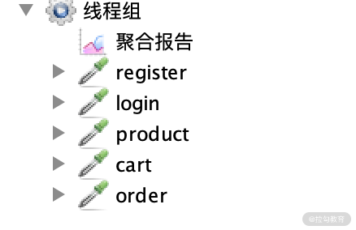
图 1：一个线程组
图中包含了注册、登录、浏览商品、查看订单等，它们在同一个线程组，基于同一线程依次进行业务。这样的做法其实和自动化非常相似。
比如张三先注册一个网站，然后进行登录、添加购物车等操作。但仔细想一想，对于一个网站的性能而言，这么考虑是有些问题的。
在正常情况下，基于同一个时间节点，一部分人在浏览商品，而另一部分人在下单。这两部分之间没有先后关系，人数占比也不一定就是 1:1。脚本中的设计思路实际上也是你对性能测试模型的理解，能够反馈出模型中的用户访问比例分布，这块内容我会在第二模块重点描述，不仅会讲述满足脚本的跑通，还会通过脚本构建基于性能模型的场景。
未提取公共部分，增加脚本管理难度
我在平时的工作中发现，有的测试会基于同一类型的 HTTP 请求，配置相同的 host、端口等，并没有很好地利用JMeter 中作用域的思想。
一般全链路级别的测试脚本里可能会包含上百个接口，对于一些 host 和端口号，并不需要每一个接口都去配置，我们可以使用一个 HTTP 请求默认值去做公共部分。如果说不提取这些公共部分，每改动一个配置，所有接口可能都要改动，这样脚本维护成本工作量也会比较大，有可能会造成“牵一发而动全身”的情况。
查看结果树使用频率高
在脚本调试过程中，我们通常会添加结果树来实时查看返回数据的正确性。这个插件本身是比较消耗性能的，在正式压测中应当禁止使用。一般来说，在脚本调试中通过作用域的思想去配置一个查看结果树就可以了，不要过度使用，不然等到正式压测的时候，一个个地禁用结果树不仅会消耗时间，还容易遗漏。
脚本逻辑复杂
有的测试在编写脚本的过程中为了区分业务逻辑，会使用很多插件，比如 if 判断、循环， 这些插件虽然可以让你进入不同的业务场景，但会增加脚本的复杂度，影响发起压力的效率。你可以自己做一些对比测试，看使用该插件和去除该插件实际的处理能力相差多少，不要因为自己的脚本结构而影响实际的性能测试结果。
以上是在脚本构建时，一些普遍存在的误区，而规范的脚本构建，我认为要做到真实和精简。
- 真实在于你的脚本可以体现出真实的用户访问场景；
- 精简在于少使用周边的插件，比如通过 JMeter 去监控服务器资源，这样的监控不仅简单粗糙，而且较大地影响 JMeter 的压力发起的效率。
脚本执行
在正确构建了脚本之后，我们就要来看如何执行脚本了。脚本执行就是你怎么去运行脚本，可能有的同学会一头雾水，我直接点击界面上的运行按钮不就行了吗？事实上真正的压测可不是这个样子的。
界面化执行性能测试
一些测试人员在 Windows 或 Mac 环境编写完脚本后，会直接用界面化的方式进行性能测试，这样的做法是非常不规范的。打开 JMeter 界面之后就会弹出提示，如图 2 所示：
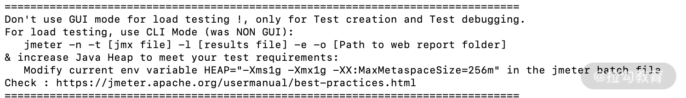
图 2：界面化性能测试提示
很多人会选择直接忽略掉，但图中的第一段是这样的：
Don’t use GUI mode for load testing！only for Test creation and Test debugging。For load testing，use NON GUI Mode。
中文意思就是图形化模式只让你调试，不要进行压测。
图形化的压测方式会消耗较多的客户端性能，在压测过程中容易因为客户端问题导致内存溢出。既然官方不推荐我们使用图形化界面，那我们应当如何执行测试脚本呢？
我们来看图 2 中的第三行内容：
jmeter -n -t [jmx file] -l [results file] -e -o [Path to web report folder]
官方早已给出答案：通过命令行执行。命令行执行的方式同样适用于 Windows、Mac 和 Linux 系统，不需要纠结系统兼容性的问题。
那既然命令行执行的方式不会造成这样的问题，为什么还要用界面化的方式呢？
相对于命令行执行，界面化的方式更为简单、方便，但命令行执行也并不是完美无缺的。
我们来回顾这段文字中的含义：
jmeter -n -t [jmx file] -l [results file] -e -o [Path to web report folder]
- -n 表示在非 GUI 模式下运行 JMeter；
- -t 表示要运行的 JMeter 测试脚本文件，一般是 jmx 结尾的文件；
- -l 表示记录结果的文件，默认以 jtl 结尾；
- -e 表示测试完成后生成测试报表；
- -o 表示指定的生成结果文件夹位置。
我们来看一下执行了上面的脚本后的实际效果，如图 3 所示：
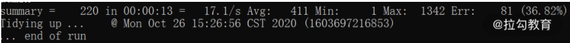
图 3：脚本执行后的效果
从图中可以看到，命令行的方式直接产生了总的 TPS、报错和一些时间层级的指标。命令行的执行方式规避了一些图形化界面存在的问题，但这样的结果输出方式存在 2 个问题：
- 看不到实时的接口返回报错的具体信息；
- 看不到混合场景下的每个接口的实时处理能力。
这 2 个问题都有个关键词是“实时”，是在压测过程中容易遗漏的点。虽然压测之后我们有很多方式可以回溯，但在性能测试过程中，发现、排查、诊断问题是必不可少的环节，它能够帮助我们以最快的速度发现问题的线索，让问题迅速得到解决。
先来看第一点：看不到实时的接口返回报错的具体信息。
jmeter.log 刚刚执行过程中记录了哪些内容呢？如图 4 所示：
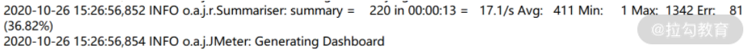
图 4：jmeter.log 执行时记录的内容
你可以看到只能显示报错率，但看不到具体的报错内容，那如何去解决呢？一般我会使用 beanshell，把判定为报错的内容增加到 log 里。beanshell 的示意代码如下所示，你可以根据自己的需求改进。
String response = prev.getResponseDataAsString();
//获取接口响应信息
String code = prev.getResponseCode();
//获取接口响应状态码
if (code.equals("200")){//根据返回状态码判断
log.info("Respnse is " + response);
//打印正确的返回信息，建议调试使用避免无谓的性能消耗
}else {
log.error("Error Response is"+response);
//打印错误的返回信息
}
这样就会自动在 jmeter.log 中打印出具体的报错信息，如图 5 所示：

图 5：报错信息
客户端的日志只是我们需要关注的点之一，排查错误的根因还需要结合服务端的报错日志，一般来说服务端的报错日志都有相关的平台记录和查询，比较原始的方式也可以根据服务器的路径找相关日志。
我们再来看第二个问题：看不到综合场景下的每个接口的实时处理能力。
我个人认为原生的实时查看结果是有些鸡肋的，如果想实时且直观地看到每个接口的处理能力，我比较推荐 JMeter+InfluxDB+Grafana 的方式，基本流程如下图所示：
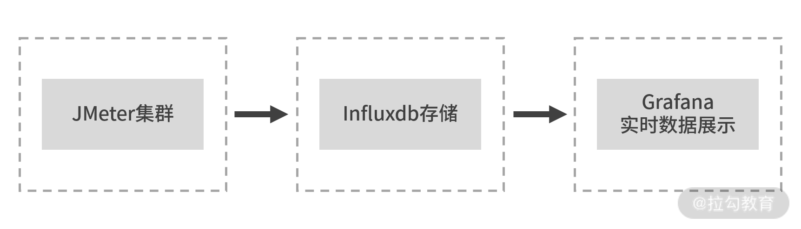
图 6：JMeter+InfluxDB+Grafana
JMeter 的二次开发可以满足很多定制化的需求，但也比较考验开发的能力（关于二次开发，我会在《04 | JMeter 二次开发其实并不难 》中介绍）。如果不想进行二次开发，JMeter+InfluxDB+Grafana 也是一种比较好的实现方式了。
下面，我会对 InfluxDB 和 Grafana 做一个简单的介绍，包括特点、安装等。
InfluxDB
InfluxDB 是 Go 语言编写的时间序列数据库，用于处理海量写入与负载查询。涉及大量时间戳数据的任何用例（包括 DevOps 监控、应用程序指标等）。我认为 InfluxDB 最大的特点在于可以按照时间序列面对海量数据时候的高性能读写能力，非常适合在性能测试场景下用作数据存储。
安装
首先带你来看下 InfluxDB 具体的安装步骤（基于 CentOS 7.0），直接输入以下命令行即可：
#wget https://dl.influxdata.com/influxdb/releases/influxdb-1.1.0.x86_64.rpm
#rpm -ivh Influxdb-1.1.0.x86_64.rpm
#systemctl enable Influxdb
#systemctl start Influxdb
#systemctl status Influxdb （查看 Influxdb 状态）
基本操作
当你已经安装完成之后，我带你了解下如何操作 InfluxDB：
#influx
linux 命令行模式下进入数据库
#show databases
查看库
create database jmeter；
建库
use jmeter
使用该库
show measurements;
查看库下面的表
InfluxDB 成功安装并且建库之后，我们就可以来配置 JMeter 脚本了。配置过程可以分为以下 3 步。
（1）添加核心插件，在 listener 组件中选择 Backend Listener（如下图所示）。

图 7：添加 Backkend Listenner
（2）Backend Listener implementation 中选择第二项（如下图所示）。
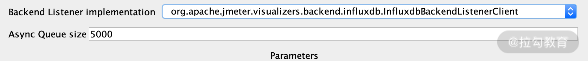
图 8：Backend Listener implementation
（3）配置 InfluxDB URL，示例“http://127.0.0.1:8086/write?db=jmeter”；IP 为实际 InfluxDB 地址的 IP，DB 的值是 InfluxDB 中创建的库名字（如下图所示）。

图 9：配置连接 influxdb 库的具体信息
配置完后运行 JMeter 脚本，再去 InfluxDB 的 JMeter 数据库中查看是否有数据，有数据则代表如上链路配置没有问题。
我们再来了解一下 Grafana。
Grafana
Grafana 是一个跨平台的开源的度量分析和可视化工具，纯 JavaScript 开发的前端工具，通过访问库（如 InfluxDB），展示自定义报表、显示图表等。大多时候用在时序数据的监控上。Grafana 功能强大、UI 灵活，并且提供了丰富的插件。
安装步骤
在 linux 命令行下直接输入以下内容即可：
#wget https://dl.grafana.com/oss/release/grafana-6.4.4-1.x86_64.rpm
#下载 granafa
#yum install Grafana-6.4.4-1.x86_64.rpm
#安装，遇到需要输入的直接 y 就 ok；
#systemctl start Grafana-server
#systemctl enable Grafana-server
#启动 Grafana
#/etc/Grafana/Grafana.ini
配置文件路径，一般保持默认配置即可。
#systemctl status firewalld.service
查看防火墙状态，防止出现其他干扰问题，最好关闭
登录访问 Grafana 访问：http://127.0.1.1:3000（ip 自行替换，3000 为默认端口）
默认账号/密码：admin/admin
输入密码后如果出现了如下界面，说明 Grafana 安装成功了。
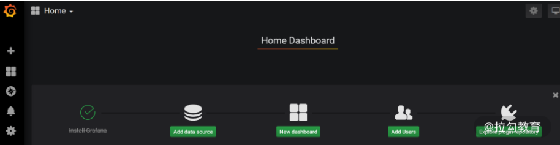
图 10：Grafana 界面
数据源配置
为什么要配置数据源呢，简单来说就是 Grafana 需要获取数据去展示，数据源的配置就是告诉你去哪里找数据，配置安装的 InfluxDB 地址和端口号，如下图所示：

图 11：配置地址和端口号
然后输入 InfluxDB 中写入的数据库名字，如下图所示：
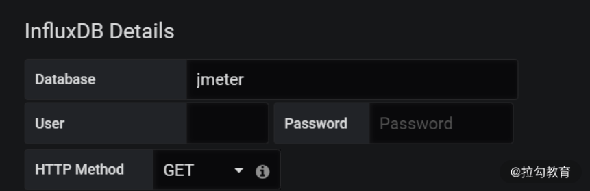
图 12：数据库名字
输入完成之后可以 Save & Test，如出现以下示意图即配置成功：
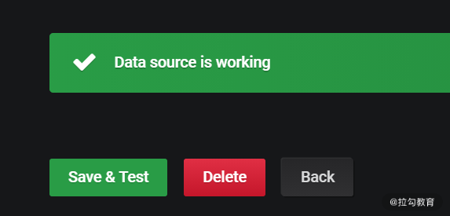
图 13：配置成功
导入 JMeter 模板
为了达到更好的展示效果，Grafana 官网提供了针对性的展示模版。先下载 JMeter 模板，然后再导入 Grafana。
图 14：导入 JMeter 模板
配置完成后，运行 JMeter 脚本。如果在界面右上方下拉选择 5s，则每 5s 更新一次：
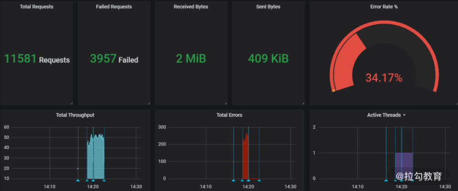
图 15：运行 JMeter 脚本
如上图便是完成了实时压测情况下运行结果的实时展示图，你可以以此为基础，进行多接口的数据采集，相应增加脚本里的 Backend Listener 插件，区分不同的 application name 名称，你会看到不同的接口数据都进入 influxdb 数据库中。并且 Grafana 从 Edit 中进入， 你可以根据不同的 application name 修改 SQL 来区分展示。
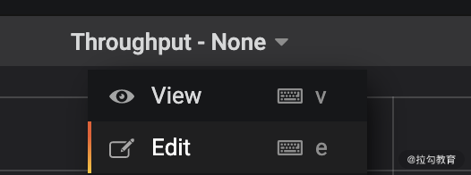
图 16：编辑 Grafana
总结
这一讲我们主要介绍了构建和执行性能测试脚本时的一些注意事项，总结了目前业内使用 JMeter 常见的方法。你不仅需要知道这些常见的手段，也需要知道为什么要这么做，这么做有什么好处，同样随着实际采集数据指标的增高，这些做法可能还会存在哪些缺陷或者注意点，如果上述内容你都能考虑清楚了，相信你也就掌握工具了。
© 2019 - 2023 Liangliang Lee. Powered by gin and hexo-theme-book.